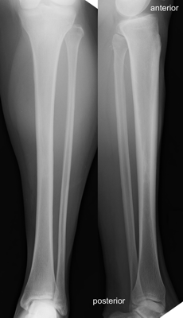

Imaging
Radiographs
AP and lateral of knee, ankle and tibia to characterize fracture and identify any associated injuries

Normal AP (left) and lateral (right) tibia
Angiogram: warranted for any suspected arterial injuries
MRI: useful for suspected stress fractures